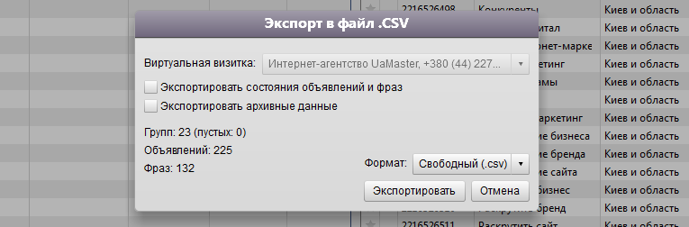

Прежде всего, вы должны загрузить кампании из Коммандера в admaker
Для этого:
- Откройте командер
- Выберите необходимые кампании
- В верхнем меню выберите: Приложение → Экспортировать в файл → Выбранные кампании...
- В открывшемся окне выберите формаn: Свободный (.csv)
- Полученный файл загрузите в admaker
